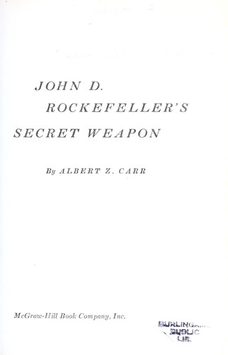

1859年，宾夕法尼亚州泰特斯维尔（Titusville）钻出了美国第一口商业油井。石油时代开启了，但一个根本问题随之而来：油从地下抽出后，如何安全、廉价、大规模地运到炼油厂和消费者手中？多数人将目光投向油井和炼油厂，约翰·D·洛克菲勒却看到了另一个关键节点——运输。他的"秘密武器"，不是某个人，不是某项专利，而是一种看似平凡的工业设备：铁路油罐车。
阿尔伯特·Z·卡尔（Albert Z. Carr）在1962年出版的这本书中，以联合油罐车公司（Union Tank Car Company）为主线，讲述了一段从1866年延续至1960年代的企业史。卡尔曾在二战期间担任战时生产委员会主席助理，后任杜鲁门总统特别顾问，同时也是《哈佛商业评论》经典文章《商业中的虚张声势合乎道德吗？》（Is Business Bluffing Ethical?）的作者。这种兼具政策视野与商业洞察的背景，使他能够将一家不起眼的油罐车公司的历史，写成一部关于垄断、权力与制度博弈的商业史诗。
故事的起点是1866年雅各布·范德格里夫特船长（Captain Jacob J. Vandergrift）在匹兹堡创建的"星号油罐线"（Star Tank Line）。这家公司最初是洛克菲勒的竞争对手，但1873年被标准石油整体收购，范德格里夫特本人也被洛克菲勒招至麾下，出任标准石油副总裁。1891年，洛克菲勒将油罐车业务重组为联合油罐车公司，使其成为标准石油托拉斯的正式子公司。这一安排的精妙之处在于：通过让油罐车公司保持表面上的独立身份，洛克菲勒得以在国会和舆论的审视下掩护其垄断结构的核心运作。
洛克菲勒的战略逻辑清晰而冷酷。由于铁路公司不愿大规模投资专用油罐车——这种车辆用途单一，空驶率高——洛克菲勒便自建庞大的油罐车队，再以里程费的形式租赁给铁路公司。他由此获得了双重杠杆：一方面，铁路公司依赖他的车队运输石油，不得不在运费上给予大幅回扣和退款（drawbacks）；另一方面，竞争对手无论怎样压缩成本，都无法匹配标准石油的运输价格优势。卡尔在书中展示了洛克菲勒如何刻意设计出一套极其复杂的关税、回扣、里程补贴和运单体系，复杂到记者、国会和公众都能感觉到标准石油拥有不公平的优势，却无法精确证明其运作方式。到1880年，标准石油控制了美国90%至95%的炼油产能。
卡尔并未止步于垄断时代。全书涵盖了标准石油与宾夕法尼亚铁路之间的商业战争、西奥多·罗斯福总统推动的反托拉斯诉讼、1911年最高法院拆分标准石油的裁决、一战期间政府接管全国铁路系统、茶壶山丑闻（Teapot Dome），以及一场引人注目的代理权争夺战。书中呈现的不仅是一家公司的兴衰，更是美国工业资本主义从野蛮生长走向制度约束的完整弧线。
《柯克斯评论》（Kirkus Reviews）称卡尔"以令人钦佩的严谨和一种能让枯燥题材熠熠生辉的文风"，将这段历史从泰特斯维尔的第一口油井一直写到1961年。哈佛大学商学院旗下的《商业史评论》（Business History Review）也刊载了由历史学家穆里尔·希迪（Muriel E. Hidy）撰写的专业书评。一位读者的评价颇为中肯："对于任何想了解铁路石油运输内部运作的人来说，这是必读之书。它极具洞察力和细节，会让你真正理解洛克菲勒作为商业大师的高明之处。"
值得一提的是，联合油罐车公司的故事并未终结于这本书。1980年代，该公司被芝加哥普利兹克家族（Pritzker）旗下的马蒙集团（Marmon Group）收购。2008年，沃伦·巴菲特的伯克希尔·哈撒韦以45亿美元收购马蒙60%的股权，并在此后数年间完成全资控股。洛克菲勒一个半世纪前打造的"秘密武器"，如今安静地运转在巴菲特的商业帝国之中——这本身就是对这项资产持久价值的最好注脚。
对于关注商业策略、竞争优势和产业史的中国读者而言，这本书提供了一个独特的切入角度：真正决定竞争胜负的，往往不是最显眼的技术或产品，而是那些隐藏在供应链深处、不易被模仿的基础设施控制权。洛克菲勒的故事表明，谁掌握了运输，谁就掌握了定价权；谁掌握了定价权，谁就掌握了整个行业。这一逻辑在今天的平台经济、物流网络和数据基础设施竞争中，依然具有深刻的现实意义。